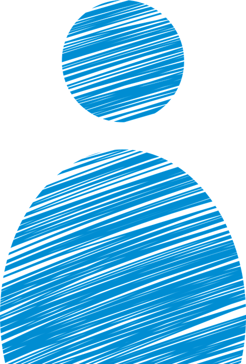

Al principio si fue muy difícil ya que no creía que pudiera bajar de peso por qué siempre
había sido gordo me recomendaron al Doc Antonio Abúndez ya que vi cambios en una
persona conocida ahí fue donde me decidi a tomar esa decisión de bajar de peso, al principio
de las secciones el doctor muestra confianza además de que te alienta a llevar una buena
disciplina en la alimentación ya en corto tiempo se vieron grandez cambios en mi persona
y asta el momento voy a las secciones pero ya con 40 kilos menos ademas una manera sana
y diferente de vivir aunque se vea imposible si se puede gracias al Doc Antonio Abúndez
Ahora soy otra persona (100 % recomendable)

Patricia Rodríguez
En toda mi vida jamás me había preocupado por los problemas de salud que provoca la
mala alimentación. Finalmente por recomendación de un amigo fui a ver a Antonio, con
quien he aprendido a tener una alimentación sana y equilibrada, además de hacer ejercicio.
Poco a poco empecé a bajar de peso sin quedarme nunca con hambre. Más que consultas,
cada que voy con Antonio son clases de nutrición. Mi salud ha mejorado mucho y mi figura
aún más. Les recomiendo su trabajo como asesor nutricional.
Alejandra Zavala
Mi nombre es Alejandra Zavala y quiero platicarles todo lo que he cambiado en estos últimos
5 meses mi estilo de vida y mi cuerpo, gracias a mi nutriólogo y Asesor de Fitness Antonio
Abundez que me ha enseñado como lleva una vida saludable. Nunca me dio dietas complicadas
donde te tienes que morir de hambre o que pueden causarte desequilibrios a tu organismo.
Mi cuerpo cambio sin operaciones estéticas donde arriesgas tu vida, pastillas o inyecciones y
químicos para bajar de peso. Antonio no da pastillas, te enseña a comer. El único secreto es
saber combinar adecuadamente tus alimentos y un plan de ejercicio, pero obviamente con la
asesoría de un experto. Antonio tiene Maestría en Nutrición.
Lizzetth Rico
Aproximadamente 1 año y medio comencé a tomar clases de ejercicio muy intensas por la
necesidad de querer bajar de peso. Al principio me costó muchísimo trabajo bajar 3 kilos
alrededor de 6 meses , pero conforme pasaba el tiempo no veía ningún cambio en mi físico,
a pesar, que constantemente me ejercitaba y pasaba 2 o 3 horas diarias en el gimnasio, tenía
ya un año con el mismo peso lo cual comenzaba a preocuparme y tome la opción de asistir
con un Asesor Nutricional (Antonio Abúndez) el cual me cambio la perspectiva de bajar de
peso. Cambie mis hábitos alimenticios y de inmediato comencé a ver resultados, los que en
un año entero no había logrado con solo hacer ejercicio, tengo un mes y medio con el nutriólogo
y he logrado bajar 7 kilos y 10 centímetros de cintura, lo cual me alegra y motiva demasiado
seguir con una buena alimentación y he comprobado al 100 % que es lo mejor, que ingerir
pastillas o laxantes.
Ana Ramírez
Soy Anna y tengo 35 años. Antes de Antonio probé distintas dietas, ejercicios con entrenador
personal, Gimnasio, etc y en realidad nada me resulto 100% efectivo a pesar de mi disciplina
y gran esfuerzo. Finalmente con Antonio como ni nutriólogo logré lo que JAMAS habia logrado:
perdí el peso extra que tenía en mi cuerpo de una manera equilibrada y sobretodo eliminé esa
grasa acumulada en áreas difíciles las cuáles jamas logre reducir...aunado a ello me siento
perfectamente de salud. Como me dice Antonio, nutrición es lo que comas, no las pastillas
que otros que ni son nutriologos te quieren dar. Sólo me queda darte muchísimas gracias Antonio
porque gracias a tu excelente asesoría, dedicación y disciplina por fin logramos mi meta añorada por siempre, debo decirte que nunca me había sentido tan bien...por todo gracias!!
Carlos Ramirez
Cuando fui por primera vez con Antonio pesaba 124 kilos y era talla de pantalón 40 y ahora
sin ningún problema soy talla 36. Nunca me imagine que pudiera volver a tener el peso
que tenía cuando era adolescente, aun falta, pero los logros se han reflejado en mi ropa.
En cada consulta he aprendido más acerca de la alimentación y siendo sincero creo que
no es consulta más bien es una clase, de cómo alimentarnos sanamente. En el pasado hice
muchas dietas y ejercicio y nada había resultado hasta que empecé este programa de nutrición
y me ha funcionado bastante bien. Tambien he ahorrado dinero, mi despensa anterior a la
semana era de casi 800 pesos y creía que me alimentaba sanamente, ahora no es ni la mitad,
no me quedo con hambre y me siento con mas energías, más activo, más concentrado en las
cosas que hago.
Luciana Hernandez
Hola mi nombre es Luciana, tengo 42 años. A principios de marzo del 2011, me diagnosticaron
con diabetes tipo 2 y pues el doctor me recomendó bajar de peso, para un mejor control de mi
diabetes. Tome cartas en el asunto y un amigo me recomendó ir con Antonio. Cuando tuve mi
primera consulta, pesaba 76 kilos, en la actualidad estoy pesando 63 kilos. Gracias a su programa,
me ayudó a conocer lo que es la buena alimentación. Esto no es una dieta y como Antonio dice,
es aprender a comer sanamente y conocer el valor de los alimentos y del ejercicio. Hoy en día
estoy feliz porque lo mejor de todo es que mi diabetes está controlada. Mi doctor de Estados
Unidos, me quitó el medicamento; mi azúcar está en sus niveles normales. Así que los que no lo han consultado, yo se los recomiendo.
Luis Morales
Debo reconocer que me equivoqué en un principio, cuando Antonio me diseñó mi plan
alimenticio y de ejercicio, empecé a bajar de peso y eso no me gustaba, pues yo quería
musculo. Ya con el tiempo me fui dando cuenta que lo que en realidad perdía era grasa,
mi abdomen se aplanó y mi figura se hizo más estética, pero lo más importante es que
ahora me siento más ligero y más sano que antes. En total perdí 7 Kilos de pura grasa.
Antonio ha sido muy acertado en indicarme qué nutrientes exactos consumir y a qué
hora para sacarles el máximo rendimiento posible. Estoy muy satisfecho con los
resultados obtenidos. Antonio es un chavo que está muy metido en su profesión y
se nota que le apasiona su trabajo
Paloma Espinosa
Le quiero dar las Gracias a Antonio por ayudarme a perder esos kilos de mas que llevo
hasta el momento , pero sobre todo por enseñarme a comer sanamante sin quedarme sin
hambre y sin necesidad de la comida chatarra. Antonio no da dietas, ni te mata de hambre,
te enseña a comer sanamente. Ahora ya me fijo mas en lo que como, he aprendido a leer
las etiquetas en el super e identificar que alimentos tienen muchas calorias y no me
convienen. Tambien sé distinguir entre los carbohidratos y las proteinas. Definitivamente
ha sido un cambio de vida y de hábitos. Estoy muy contenta con los resultados y sin
tener que tomar ningun tipo de pastillas. Hasta el momento ya llevo mas de 22 kilos
perdidos y nunca he tenido rebote.